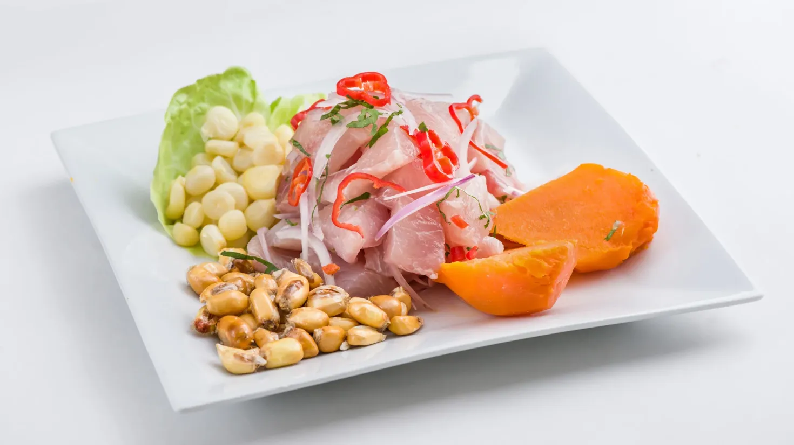

Home
Ceviche

Descripción
El ceviche de pescado es el plato bandera de la gastronomía peruana y un verdadero homenaje a la frescura del mar. Su preparación destaca por la sencillez y elegancia de sus ingredientes: finos trozos de pescado blanco marinados al instante en jugo de limón recién exprimido, acompañados de ají limo picado, cebolla morada cortada en plumas finas y un toque de cilantro fresco. El resultado es un equilibrio perfecto entre la acidez cítrica, el toque picante y el sabor natural del pescado.
Tradicionalmente se sirve acompañado de camote glaseado, choclo desgranado y cancha serrana, elementos que aportan dulzor y una textura crujiente indispensable. Más que un platillo, el ceviche es una experiencia cultural y refrescante que resalta la calidad de sus insumos y celebra la rica tradición marina de las costas sudamericanas.
Ingredientes
- 500 g de filete de pescado blanco fresco
- 8 a 10 limones frescos
- 1 cebolla morada grande
- 1 a 2 ajíes limo
- 2 cucharadas de cilantro fresco
- Sal marina y pimienta al gusto
- 1 diente de ajo machacado
- 1 a 2 camotes sancochados
- 1 choclo (maíz tierno) hervido y desgranado
- Cancha serrana
- Hojas de lechuga fresca
Pasos
- Preparar los acompañamientos: Sancocha el camote y el choclo en ollas separadas hasta que estén tiernos. Tuesta la cancha serrana en una sartén con un hilo de aceite hasta que esté dorada y crujiente. Reserva todo a temperatura ambiente.
- Acondicionar el pescado: Corta el filete de pescado en cubos uniformes de aproximadamente 2 cm. Colócalos en un tazón (de preferencia de vidrio o acero inoxidable) y pásale un trozo de hielo para mantener la carne bien fría.
- Sazonar la base: Añade sal al gusto, el ajo machacado, el ají limo picado y el cilantro. Mezcla suavemente con una cuchara para que el pescado absorba los sabores iniciales.
- Marinar con el limón: Exprime los limones al instante sobre el pescado, evitando presionarlos demasiado para no extraer el amargor de la cáscara. Mezcla bien y deja marinar entre 1 y 2 minutos (el pescado debe cambiar ligeramente de color por fuera sin perder su jugosidad).
- Incorporar la cebolla: Lava la cebolla morada previamente cortada en plumas con agua helada para restarle intensidad. Agrégala al tazón justo antes de servir y mezcla suavemente.
- Servir inmediatamente: Coloca una hoja de lechuga como base en el plato, sirve una porción generosa de ceviche con su jugo (leche de tigre) y acompaña a un lado con rodajas de camote, choclo desgranado y cancha serrana.